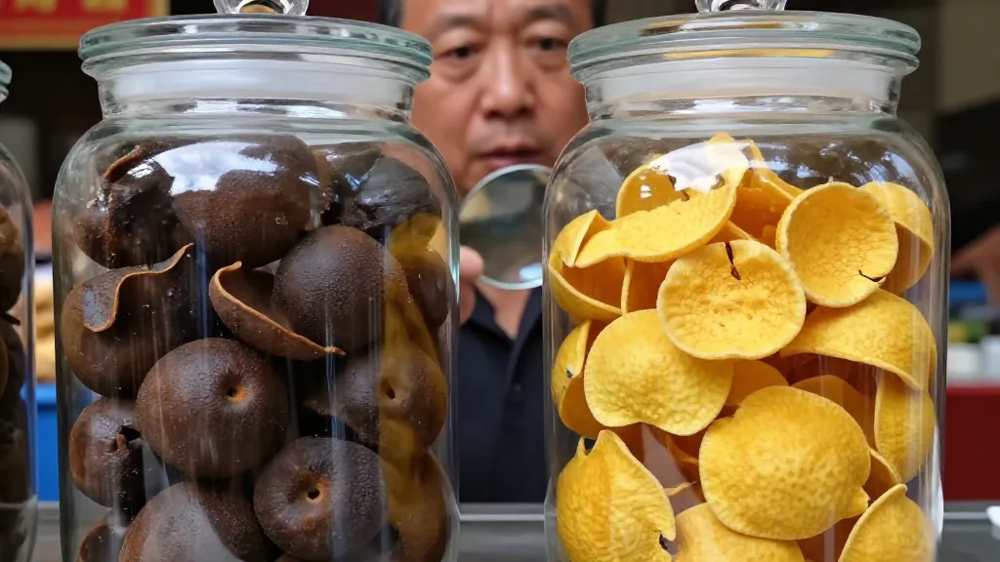
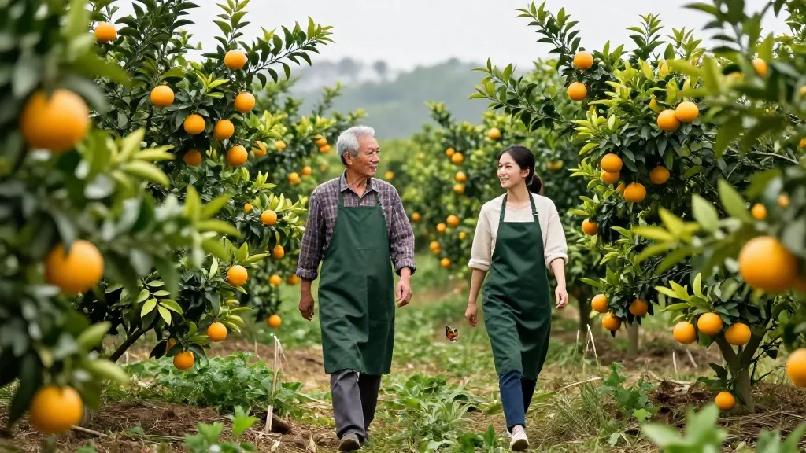
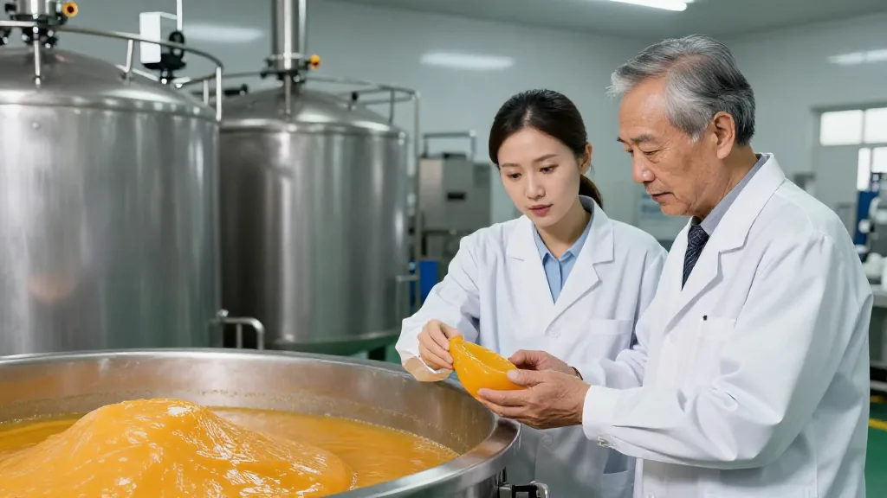

一、每年25萬噸柑肉：被遺忘的另一半
走過仲秋的新會街頭，藥材清香撲面而來。陳皮店忙著打包寄貨，而讓陳董費神的，不是在銷售端的熱鬧，而是在柑肉處理這個老難題上如何落筆。
一個產業，兩種命運。 2013年，儲存73年的「陳皮皇」100克拍出12.5萬元；但新會柑每斤只要三四塊錢，剝皮後的柑肉無人問津，成為垃圾。
據測算，新會區種植規模7萬畝、每畝年產柑肉2噸，加上「廣陳皮柑」，每年約有25萬噸柑肉被廢棄。這些柑肉傾倒在道路邊、溝渠裡，烈日下酸腐味招來蒼蠅嗡嗡。
「陳皮是，皮肉分離之後，柑肉卻成了廢物。」陳董說，「我們想改變這個局面，讓每一片柑果都物盡其用。」
二、央視曝光餘波未了：打假風暴重塑市場
今年9月21日，央視財經《財經調查》欄目曝光的陳皮造假黑幕持續發酵。報道揭示，市面所謂「新會陳皮」中八成為廣西等地陳皮，部分商家將外地「工藝皮」運至新會短暫存放後冒充正宗產品，更有甚者用烘坊一個月速成「三年陳皮」，成本僅70元/斤，售價卻可衝至1000元/斤，利潤高達二十倍。

這場曝光在新會本地引發的震動，遠比外界看到的更大。江門市市場監管局數據顯示，截至2026年7月，全市累計檢查相關經營主體22146家次，立案查處違法案件311宗，罰沒374.69萬元。
2026年7月，新會區啟動全區新會柑鮮果產量線上登記申報工作，從源頭鎖定每年可加工陳皮的總量，杜絕市場上無限制虛標產量之亂象。

三、有機突圍：高品質賽道悄然開啟
在打假風暴席捲的同時，另一條賽道的探索靜悄悄展開。茶坑村一片100多畝的莊園，隸屬於溫和堂健康產業有限公司——這是新會第一個全程採用國家有機產品標準種植的新會柑場。
嚴禁除草劑、嚴禁化學藥物、嚴禁轉基因技術，每畝僅種56棵果樹。溫偉成表示，今年7月已完成鮮果檢測，有望成為全國首家通過有機認證的新會柑種植莊園。
「有機新會柑」背後有清晰的商業邏輯：高端消費者希望得到有機、純淨、無農殘的頂級產品。有機種植的探索，精準對準了這部分市場。

四、價格分化：啞鈴型市場結構
眼下陳皮市場呈現明顯的「啞鈴型」結構：低端混亂（3至5年電商低價30至200元/斤，假貨泛濫）；高端堅挺（8年以上維持128至145元/斤，15年以上可達數千元/斤）；中端乏力（5至10年品質產品年份標注模糊，缺乏腰部標桿）。
調研數據顯示，82%的消費者無法辨別陳皮年份，75%分不清產地。這一認知鴻溝，恰恰是中端市場難以壯大的根本原因。
「陳皮是時間的產品，看年份吃飯。」滢滢姐在直播間說，「中秋月圓，新會陳皮站在產業升級的十字路口：柑肉困局倒逼綠色循環，打假風暴凈化市場秩序，有機種植開闢高端賽道。這個千億產業的下一程，不取決於講了多少故事，而在於能否讓每一塊陳皮都經得起追溯。」
想系統瞭解陳皮從選果到陳化的全流程，加滢滢微信。每天早上 7 點到中午，來滢滢直播間看看真正的曬皮場；想學鑑別，看看陳皮匠心與時間的故事。留言告訴滢滢：你身邊有沒有人買到過假陳皮？